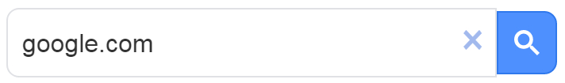
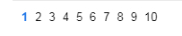
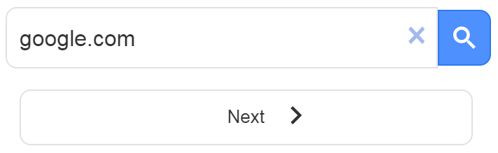
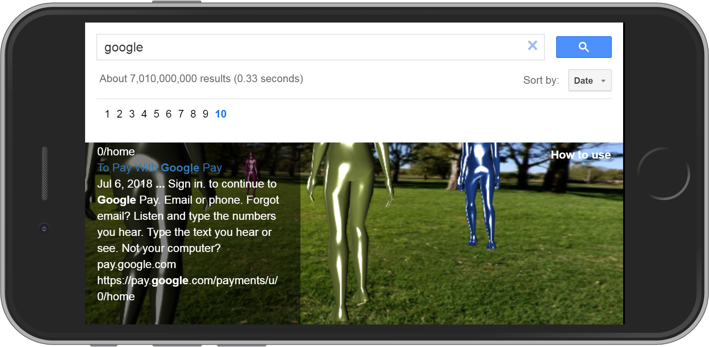

1. Type the text you want to search in the query textfield  and press enter (or click the "search" button).
2. When results arrive, below the search textfield will appear a numbered bar from 1 to 10  (if you are using desktop device) or a pager with a next arrow button  (if you are using mobile device).
Google Custom Search delivers 10 result pages with 10 results per page. As the first result page arrives, Google Search Webspace creates one pegman for each result. If you want to add more result pages (and more pegmen in your screen) just click the pager button (or the page numbers) in result pager bar. As many results added so many pegmen created.
When you have add as many results you wish, you can close the pager bar to make more room in your screen. Pegmen are available until the next time you will use the search textfield. Just click the (x) button at the end of the search textfield. This will clear the search box and remove the pager bar. No more added pegmen.
Each pegman carry a search result. When a pegman is focused its result is displayed in the bottom left corner result box. Focused pegman may be exchanged while pegmen cross each other. When focused pegman changes the result box content updates. You can click on a pegman and jump to its result. What's the caught? Pegmen never stop running and cross each other. So you must be fast. Actually you are hunting results.
Result box is located in the lower left corner (or side) of your application. It appears the result that current focused pegman carry. Clicking a link in the result box opens a new window and loads the linked page to find out what you are looking for. If not, you can come back to the application and try with an other pegman. Pegmen are still there running up and down dizzying you until the next search where a new pegmen generation will take over.
Enjoy!